Kanalkodierung
Man kann nicht garantieren, dass ein Kanal eine Übertragung fehlerlos übertragen hat.
Binären Kanal
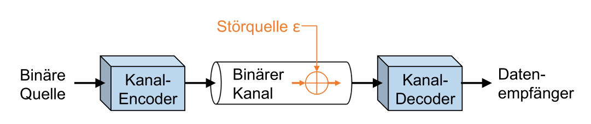
\(\varepsilon\) (Epsilon) ist die Wahrscheinlichkeit, wie oft ein Fehlerauftritt (Bit Error Ratio = BER)
Symmetrische und asymmetrische Kanäle
Ein symetrischen kanal hat die selben \(\varepsilon\) für beide wege. Ein Asymetrischen Kanal hat hingegen eine andere warscheinlichkeit, dass eine 0 zu einem 1 wird als umgekehrt.
In dem folgenden Bild sieht man ein symmetrischen Kanal
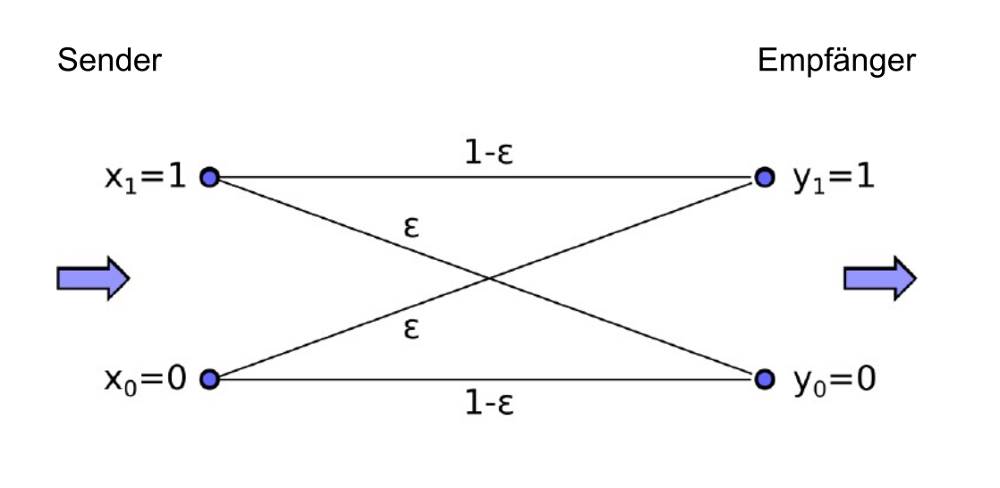
\(P(y_m|x_n)\) steht für die Wahrscheinlichkeit, dass \(x_n\) zu \(y_m\) wird.
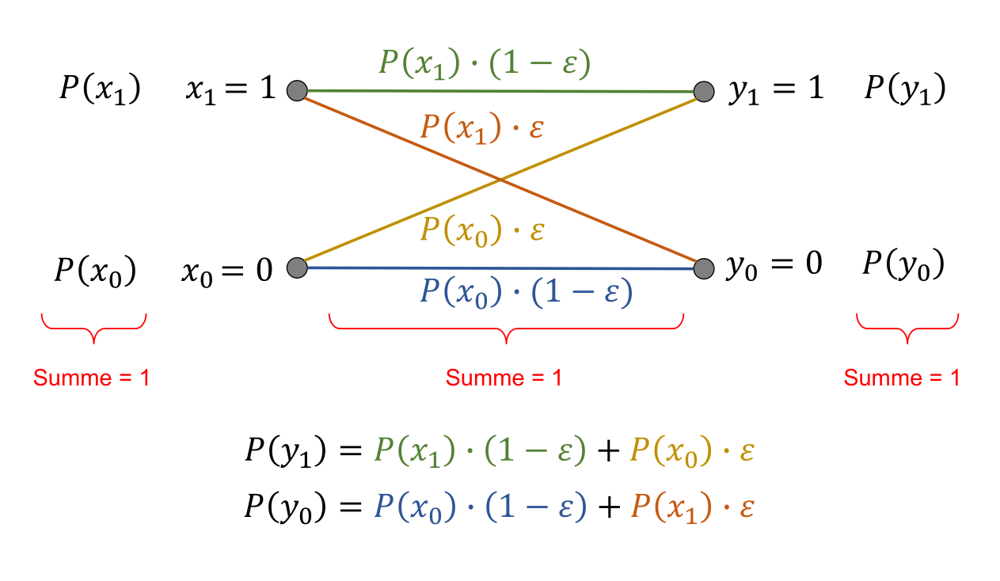
Im obigen Bild sieht man nun, wie die Formeln für die Wahrscheinlichkeit für das \(y_0\) eintritt, bzw. dass \(y_1\) eintritt. Die Summe von \(P(y_1)\) und \(P(y_0)\) muss 1 ergeben.
TODO: Entropie berechnen
Kanalkapazität
Die höchste Kapazität eines Kanals ist 1bit Information pro versendetes 1 bit.
Beides, die maximale Kanalkapazität, wie auch die Störquelle, kann als Binary Memoryless Source (BMS) interpretiert werden und so die standard Entropie Formeln benützt werden.
Daher kommt man auf die foglenden Formel:
\(C_{BSC}(\varepsilon)=1-H(\varepsilon)=1-(\varepsilon \cdot log_2 \frac 1 \varepsilon + (1-\varepsilon )\cdot log_2 \frac 1 {1 - \varepsilon})\)
\(C_{BSC}\) hat die Masseinheit bits/bits (bits pro bits).
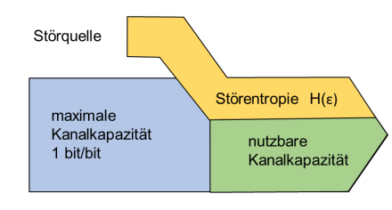
Mathe
Um ein Frame zu brechnen gillt folgene Formel: \(A_1 = A(1 - \varepsilon)\), dabei ist A die länge in Bits des Frames.
Für mehrere Frames gillt: \(A_N=A(1-\varepsilon)^N\)
Wenn \(\varepsilon\) nahe an 1 ist, kann die folgende Näherung genutzt wird: \(1 - N\cdot \varepsilon\)
Mehr-Bit-Fehlerwahrscheinlichkeit
Wenn berechnet werden soll, was die Wahrscheinlichkeit ist, dass eine N-lange Sequenz genau F Fehler auftreten, dann kann folgende Formel genutzt werden:
\(P_{F,N}=\begin{pmatrix}N \\ F\end{pmatrix} \cdot \varepsilon^F \cdot (1-\varepsilon)^{N-F}\)
Dabei stellt F die Anzahl Fehler dar, N die Länge des Block-Codes und \(\varepsilon\) die Bit Error Ratio des Kanales.
Binominalkoeffizenten
\(\begin{pmatrix}N \\ F\end{pmatrix}\) wird gesprochen als n choose r und kann folgender massen berechnet werden
\(\begin{pmatrix}n \\ k \end{pmatrix}=\frac{n!}{k!\cdot(n-k)!}\)
Einige Taschenrechner haben eine Taste nCr, welche dies ausrechnen kann (der Canon F-718SGA hat dies ebenfalls)
Framegrössen
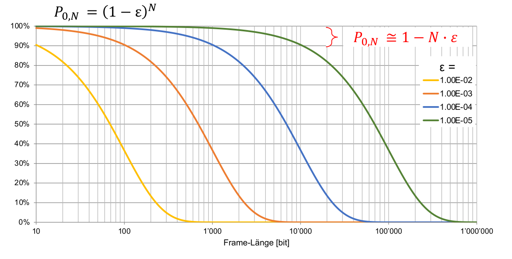
Im obigen Bild sieht man die Wahrscheinlichkeit, dass ein Frame ankommt für eine gewisse Frame-Grösse.
In dieser Abbildung sieht man, dass grosse Frames erst wirklich Sinn ergeben, wenn man Fehlerresistenten Kanal hat.
Fehlerkorrekturverfahren
Backward Error Correction
Es wird eine gewisse Redundanz hinzugefügt (z.B. CRC), welche es erlauben, einen Fehler zu erkennen und die Daten nochmals anzufordern.
-
Der Empfänger schickt eine Quittung zurück. Wenn keine Quittung erhalten wurde, wird das Packet nochmals gesendet.
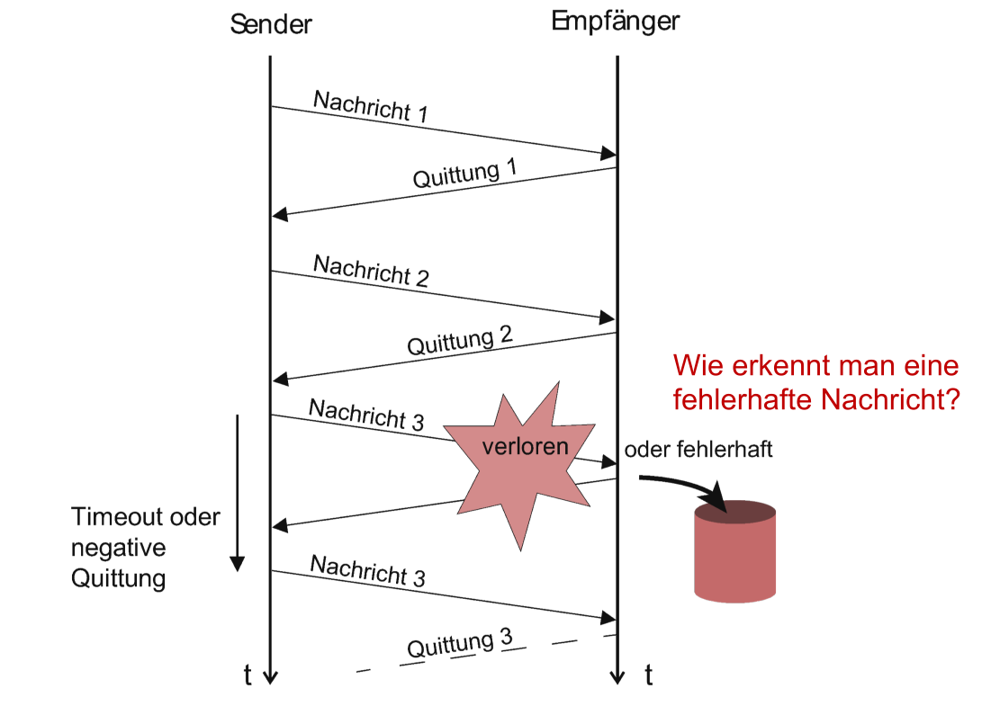
-
Nachteile:
-
Langsam, da immer gewartet werden muss (Dies kann etwas mitigert werden, in dem die nächste Nachricht bereits versendet wird, bevor die Quittung ankommt)
-
Ein Rückkanal ist erfoderlich
Forward Error Correction
- Mehr Redundanz, so dass der Fehler sogar korrigiert werden kann
Hamming-Distanz
Die Hamming-Distanz beschreibt, wie viel Bits sich zwischen zwei Codewörter ändert.
Die Codwörter können auch auf einem Würfel dargestellt werden in dem die Codewörter in folgendes Koordinatensystem eingetragen werden:
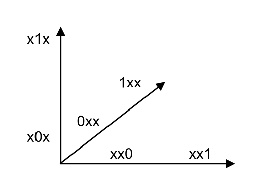
Wenn alle Codewörter (im Beispiel unten ein 3-Zeichen langen Block-Code) in einem solchen Koordiantesystem eingetragen werden, kommt einen Würfel oder ähliches heraus.
Pro Zahl braucht man eine Dimension.
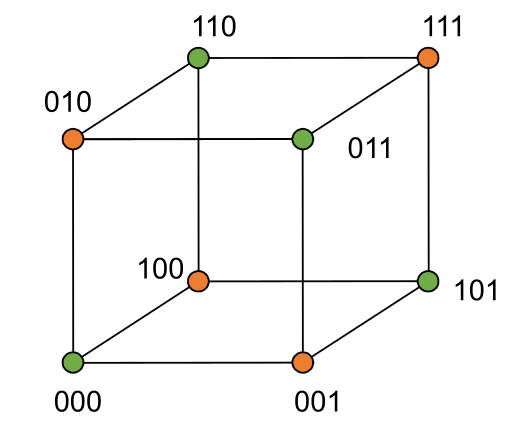
Die minimale Hamming-Distanz ist die kleinste Distanz zwischen zwei korrekten Code-Words.
Fehlerkorrektur mit Matrizen
Block-Code
Bei einem Blockcode werden die Informationen in Blöcke verschickt. Dabei gibt es die N, die Anzahl Bits für Informationen und K, die Bits für den Fehlerschutz
Systematische Blockcodes sind Blockcodes, bei welcher die Fehlerschutzbits zu Beginn oder am Ende steht.
Systematischer Block-Code
In einem Systematischer Block-Code sind die Informationsbits klar von den Fehlerschutz-Bits getrennt. Als entweder kommen zuerst die informations-Bits und dann die Fehlerschutz-Bits oder umgekehrt.
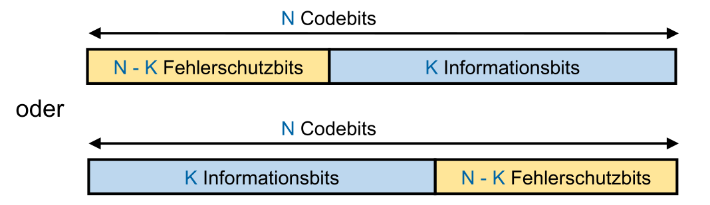
Linearer Block-Code
In einem linearen Block-Code, wenn man zwei beliebige Codes zusammen xored, dann ergibt dies einen weiteren gülltigen Code.
Der Code C={000, 110, 001, 101} wäre zum Beispiel einer.
Jeder Linearer Block-Code benötigt einen Code mit nur 0.
Wenn Codewörter aus einer Generatormatrix generiert wird, dann ist der Code linear.
Zyklischer Block-Code
Ein zyklischer Block-Code kann man um eins Rotieren und bekommt wieder ein valides Codewort.
Als Beispiel. Aus "110" wird "011", dann "101" und dann wieder "110".
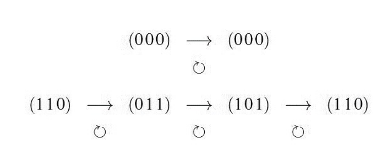
Perfekter Block-Code
Ein Perfekter Blockcode hat die selbe Hamming-Distanz zwischen allen Codwörtern
Fehlererkennung
Parity
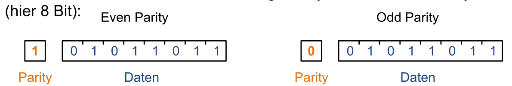
Für ein Datenblock gibt es ein Parity-Bit.
-
Even Parity: Parity-Bit ist 1, wenn die Anzahl 1-er inkl. Parity-Bit is gerade, sonst 0
-
Odd Parity: Parity-Bit ist 1, wenn die Anzahl 1-Bit inklusiv Parity-Bit ungerade ist, sonst 0
Der Vorteil von Even-Parity ist, dass es linearen Block-Code ist.
Mit dieser Methode kann 1-Bit Fehler erkennt wrden.
Quer-Pariy
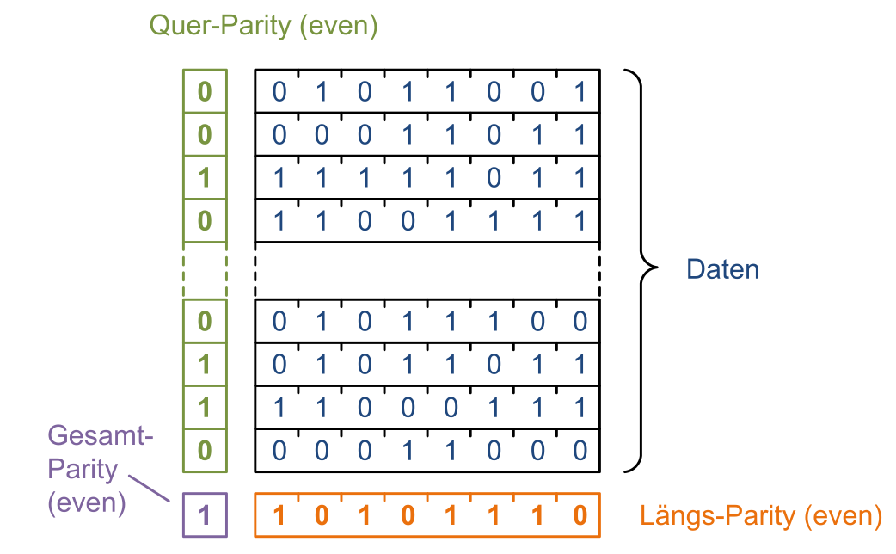
Es wird ein Parity-Bit horizontal gebildet und ein Parity-Bit vertikal. Für einen Block gibt es nun eine Linie für die horizontale gebildete Parity-Bits und eine Line für die vertikal gebildete Parity-Bits. Diese zwei Parity-Bit-Linien werden nun in ein Gesamt-Parity-Bit gerechnet.
Die Coderate (\(\frac K N\)) ist \(\frac{länge\cdot breite}{länge \cdot breite + länge + breite + 1}\)
Um dies zu optimieren, sollte probiert weden, den Blöck möglich Quadratisch zu gestalten. Länge und Breite sollte also möglich gleich sein.
Prüfsumme
Man summiert alle Reihen/Elemente zusammen (\(\sum^{n-1}_{i=0}Element_i\))
Dabei hat man eine minimale Hamming-Distanz von 2. Die Hamming-Distanz in einigen Fällen kann auch höher sein, da es ein Übertrag geben kann und somit ein Bit-Wechsel mehrere Bit-Änderungen in der Prüfsumme zu folge haben.
TCP & UDP Prüfsumme
Die Prüfsumme wird über ein Frame gebildet mit der Wortbreite von 16 Bis.
//TODO
1-Bit Arithmetik
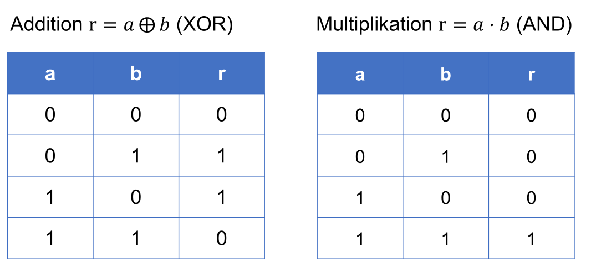
Wichtig ist, dass es keine 2 geben kann (1+1=0). Der Übertrag wird vergessen.
Man kann eine solche Zahl auch als Polynom darstellen.
\(1011=1\cdot z^3+0\cdot z^2+1\cdot z^1+1\cdot z^0\)
Auch mit diesem Polynomen kann man mit der 1-Bit Arithmetik rechnen. Beispiel: \(\begin{alignat} {1} (z^3+z^2+1)\pm(z^2+z+1)=&z^3\cdot(1\pm0)+z^2\cdot(1\pm1)+z^1\cdot(0\pm1)+z^0\cdot (1\pm1)\\=&z^3+z\end{alignat}\)
Dasselbe Spiel kann auch den anderen Rechnenoperationen durchgespielt werden.
CRC
Bei CRC teilt man den Datenblock als Polynom durch ein Generator-Polynom. Der dabei resultierender Rest ist die Prüfsumme, welche mit verschickt wird.
Es gibt verschiedene Generator-Polynome, jenach dem welchen Standard man folgt.
Im Verfahren wird der Datenblock um die Anzahl Bits der Prüfsumme verschoben (also aus 10, wird zB. 1000, wenn die Prüfsumme 2-bit lang ist). Danach wird das Datenblock Polynom durch das Generator-Polynom geteilt. Der Rest, der dabei heraus kommt wird zum Datenblock addiert. Da man um die Anzahl Stellen der Prüfsumme zu begin verschoben hat, hat man nun die Prüfsumme vor der Zahl "eingefügt".
Nun haben wir ein Datenblock, welchen sicher durch den Generatorblock geteilt werden kann.
Beispiel mit Dezimalzahlen: Datenblock: 123, Generatorbits: 12)
1230 : 12 = R6 -> 1236 ist teilbar
Ebenfalls wichtig ist, dass wenn man durch eine Zahl teilt, ist der Rest höchsten der Rest-1. In Binär heisst dass, eine Stelle weniger als durch was man geteilt hat.
Fehlerkorrektur
Forward Error Correction
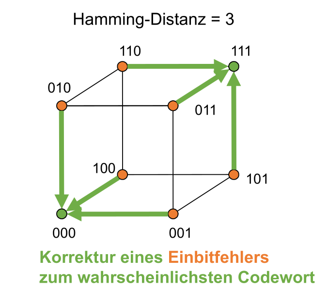
Wenn man eine Hammingdistanz von 3 hat, kann man ein Bit korigieren. Dabei wird angenommen, dass ein Bit falsch ist und korrigiert zum nächsten validen Codewort. Dies kann aber auch falsch sein!!
Wie man oben bereits gesehen hat, nimmt man das Codewort, welches am nächsten ist.
Dabei kann man \(\left \lfloor{\frac{d_{min}-1)} 2}\right \rfloor\) Fehler korrigieren.
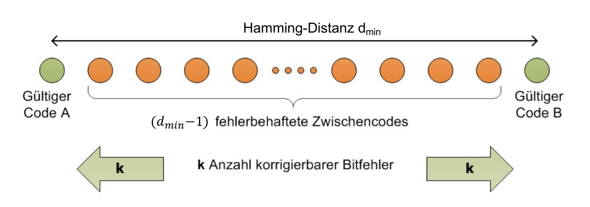